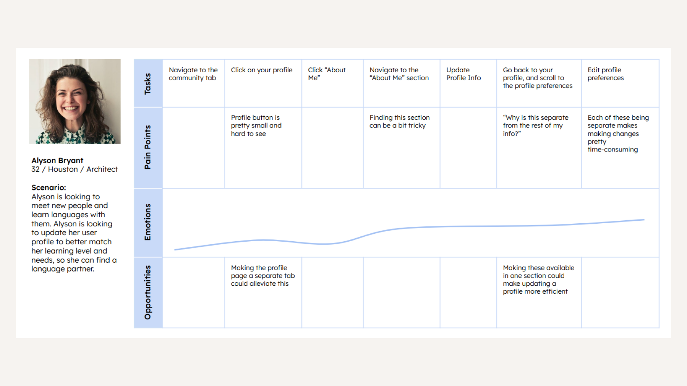

Tandem
Tandem is a language exchange app that aims to bring users together to share their native languages and assist others in learning. In this app redesign, I am exploring how app navigation and accessibility can reduce overwhelm. Additionally, further personalization can help users feel safe and welcomed while navigating the world of language learning.
View the full case study here
The Problem
Tandem's app offers great potential for users to have a wonderful learning experience. The app allows users to quickly match with a native speaker and share their own language with others. Upon interviewing users of the app, I found that many of them felt the app could be intimidating and hard to navigate.
Starting a conversation with a stranger can be intimidating and overwhelming for some users. My redesign of this app focuses on how we can limit the fear around these conversations, and help users feel more welcomed within the language sharing community.
Another prominent concern users voiced was a difficult navigation scheme. Many felt that navigating finding a partner can be quite difficult. Some users also voiced that navigating their user profile and editing/updating could be very difficult as well.
My Process
For this project, I began with user surveys. As stated above, many users felt the app structure and the idea of meeting new people could be intimidating and hard to navigate. After receiving this feedback, I started planning. Based on my goals and research, I started creating wireframes to plan how I wanted the app to look. From there, I began the protoyping process, utilizing user testing to ensure the app met the needs of those who would be using it.

Before

Research

wireframes

PROTOTYPING